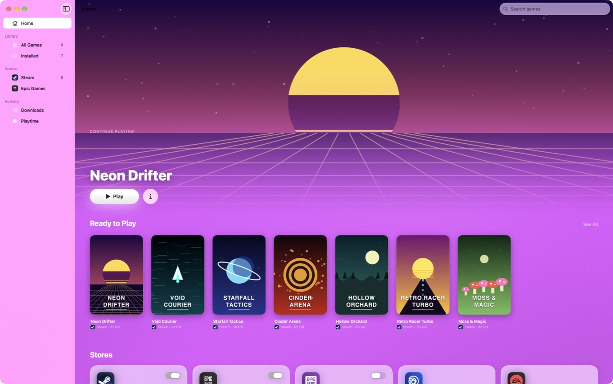
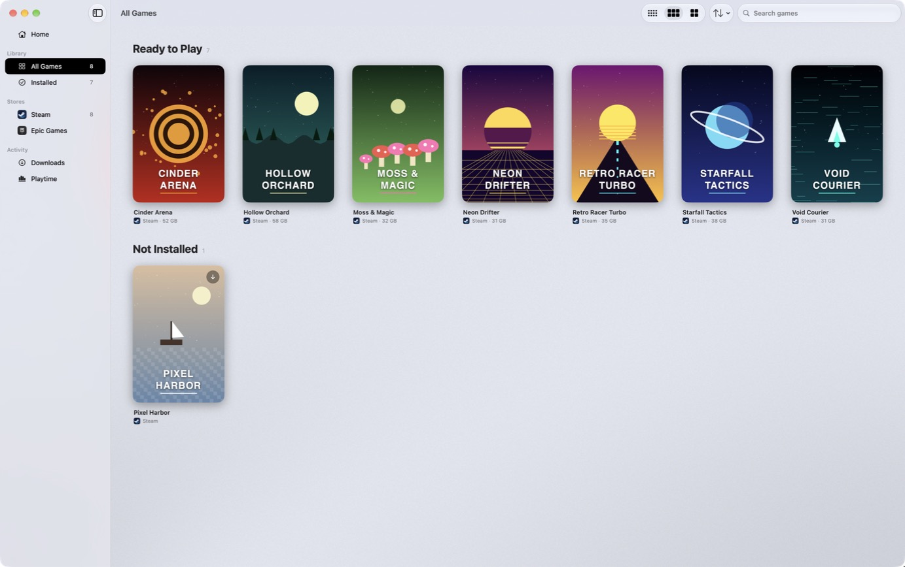
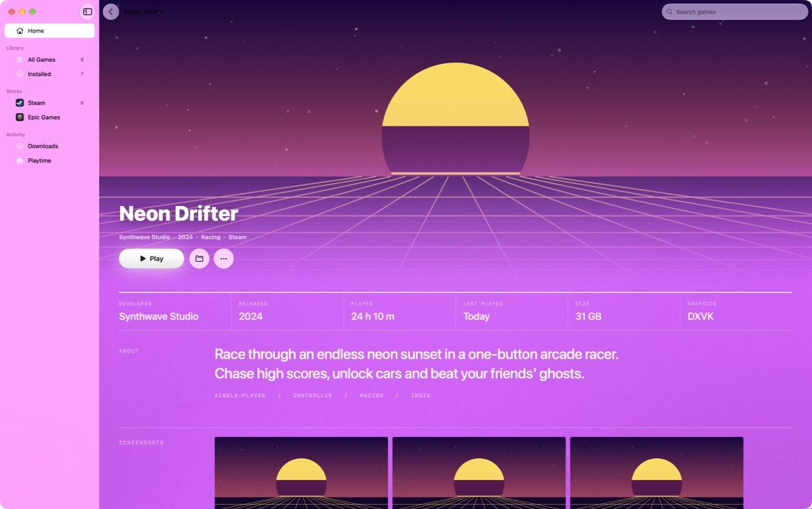
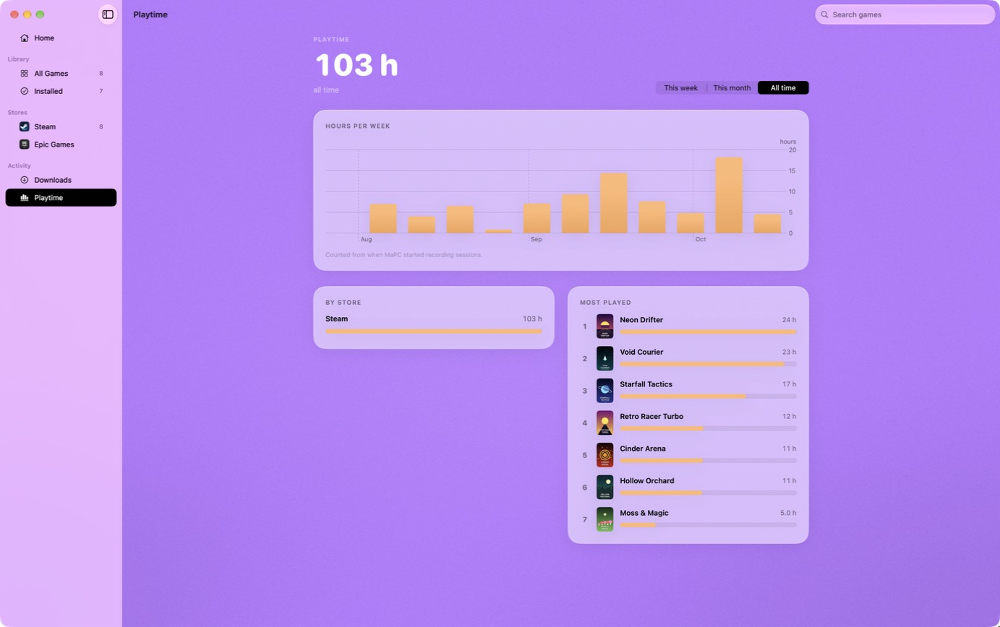
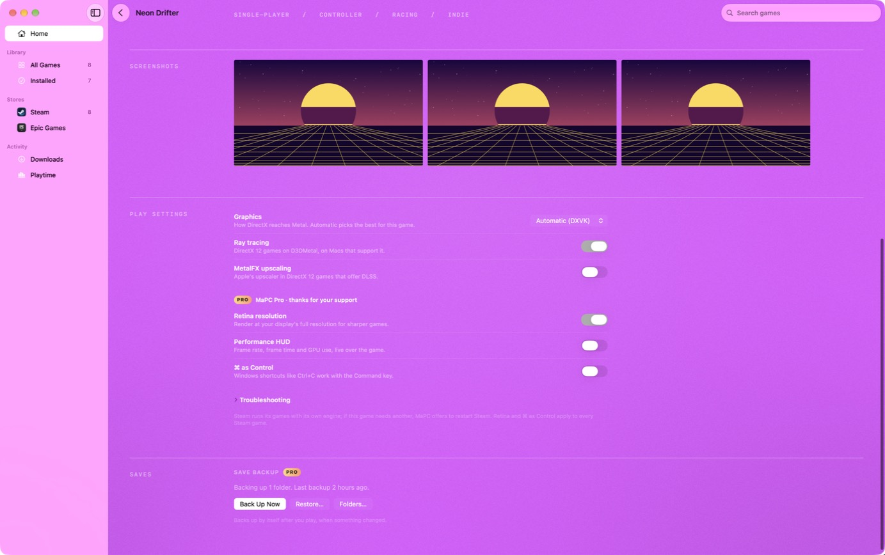

For Apple Silicon Macs
Your PC games, on your Mac. Connect Steam, Epic and GOG, then press Play. No Wine to set up, nothing to tinker with.
macOS 15 or later · Apple Silicon · Version 1.0 · What it can’t do

How it works
Three steps. Connect, install, play.
Connect your stores
Sign in to Steam, Epic Games or GOG on their own pages. MaPC never sees your password.
Install a game
Pick a game from your library and press Install. Progress shows up in Downloads.
Press Play
MaPC picks the right graphics settings for the game. Change them per game if you like.
A look inside
Made for the Mac. Not a web page in a window.




Features
Everything you already own. Free, and it stays that way.
Steam, Epic and GOG. Your libraries side by side, with cover art, search and sorting. Install, play, uninstall.
DirectX 11 and 12. DirectX 12 games run through Apple’s own D3DMetal, set up in one guided step.
Per-game settings. Graphics backend, ray tracing, MetalFX upscaling and launch options, saved for each game.
A real Mac app. Built with SwiftUI. Light and dark mode, and game pages that take their colors from the game’s art.
Private by design. No telemetry and no analytics. Store logins stay on your Mac.
Open engines. Runs on Wine, DXVK and MoltenVK. We publish the source of every engine we build.
Download
Free to download. Free to play.
- A Mac with Apple Silicon (M1 or later)
- macOS 15 or later
- Rosetta 2 (MaPC offers to install it)
- About 30 GB free for the engine and games
Open the disk image, drag MaPC to Applications, and follow the setup. The game engine (about 210 MB) downloads on first launch and is checked before it’s used.
Every download is listed with its SHA-256 on the releases page.
Support MaPC
Chip in, get the extras. MaPC itself is free. Supporting it pays for new stores, game fixes and engine updates, and unlocks these as a thank-you.
Save backup. Copy a game’s saves to iCloud Drive or any folder, automatically after you play. Restore in one click.
Playtime stats. Hours per game, week and store, and your most played.
Keep Mac awake. The display stays on while a game runs.
Game shortcuts. One-click launchers for Applications, the Dock and Spotlight.
Menu bar launcher. Your recent games a click away.
Siri and Shortcuts. “Play your game in MaPC”, from Siri, Spotlight or Shortcuts.
Retina resolution. Render at your display’s full resolution for sharper games.
Performance HUD. Frame rate and GPU use, live over the game.
Wall of Fame. Your name on the high-score board, here and in the app.
One-time purchase, up to 5 of your Macs, every extra we add in the 1.x versions. 14-day refund, no questions asked. Paid through Gumroad with a card or PayPal. See the terms.
Wall of Fame
THANK YOU FOR KEEPING MAPC GOING
Be honest
What MaPC can’t do. Better to know before you download.
FAQ
Questions? Answers.
What is MaPC?
A native Mac app that installs and runs Windows games from Steam, Epic Games and GOG on Apple Silicon Macs. It uses Wine underneath, and you never have to deal with it.
Is it really free?
Yes. Every store, installing, playing and DirectX 12 support are free. Supporting MaPC is optional and unlocks a few extras. You can use the app for as long as you like without paying.
What do I get when I support MaPC?
Save backup and restore, playtime stats, keep-Mac-awake, game shortcuts, a menu bar launcher, Siri and Shortcuts, Retina resolution, the performance HUD, ⌘ as Control, and your name on the Wall of Fame. It’s a one-time purchase that works on up to 5 of your Macs and includes every extra added in the 1.x versions.
Which Macs does it run on?
Macs with Apple silicon (M1 or later) running macOS 15 or later. It also needs Rosetta 2, which the setup offers to install.
Which games work?
Many Direct3D 11 and DirectX 12 games do. Games with kernel-level anti-cheat can’t run. There’s no guarantee for any one game, so try it free first. If you support MaPC and aren’t happy, you have 14 days to get a refund.
How does DirectX 12 work?
MaPC uses Apple’s D3DMetal, which comes with Apple’s Game Porting Toolkit. Apple’s license doesn’t allow MaPC to include it, so setup walks you through downloading it from Apple and checks that it’s genuinely signed by Apple.
Is my data private?
MaPC has no telemetry, and this site has no analytics or cookies. You sign in to stores on their own pages, and the login tokens stay on your Mac. If you support MaPC, the app sends your license key to Gumroad to confirm it. Read the privacy page.
Can I use one license on several Macs?
Yes, up to 5. If you need to move it to another Mac, email support@mapc.games.
How do refunds work?
Reply to your Gumroad receipt or email us within 14 days for a full refund. The license stops working and MaPC goes back to the free version. See the terms.
Is MaPC connected to Valve, Epic, GOG or Apple?
No. MaPC is an independent app made by Steale LLC. Those names belong to their owners and are used only to say what MaPC works with.
How do I get help?
Email support@mapc.games. Include the game, your Mac model and macOS version, and the log from the game’s page (More › Show Log).